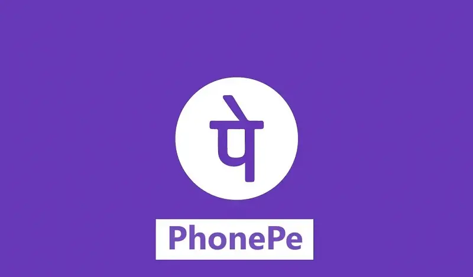

Fake Phonepe APK: Exploring the Features, Use Cases, and Implications of a Financial Prank App
In the ever-evolving landscape of mobile applications, there exists a unique category of tools designed not for functionality or productivity, but for humor, mischief, and harmless fun. One such example is Fake Phonepe APK—an app that mimics the interface and functionalities of the popular Indian digital payments app PhonePe, but with a twist. It is not built to process real transactions, but rather to simulate them for entertainment or trickery.
What is Fake PhonePe APK?
Fake PhonePe APK is a mobile simulation app that replicates the interface and functionality of the official PhonePe app, one of India's most popular digital payment platforms. Unlike the original, this APK does not process real payments. Instead, it provides a virtual experience that mimics financial transactions for pranks, content creation, or demonstration purposes.
This tool is widely used by content creators to simulate fund transfers, balance displays, and other actions that usually occur in the PhonePe environment. The key feature of this app lies in its ability to imitate the interface with precision, making it ideal for those looking to fool friends, create comedic videos, or stage mock financial demonstrations.
Main Features of Fake PhonePe APK
- Realistic Interface: The UI is almost identical to the official PhonePe application, ensuring an authentic look and feel for prank or demo purposes.
- Customizable Transactions: Users can input any transaction amount, receiver details, and even mock transaction IDs.
- Fake Balance Generator: Allows users to set a fake wallet balance that appears real in screenshots and screen recordings.
- Simulated Transaction History: Users can generate a full mock history of transactions, complete with timestamps and descriptions.
- Instant Screenshot Option: Take a screenshot of the transaction screen directly within the app for quick sharing.
- No Real Money Required: The app is 100% fictional, and no real money is involved in any operation.
- Offline Functionality: The app can work without an internet connection, which further enhances the prank realism.
Use Cases of Fake PhonePe APK
Though it doesn’t serve any financial function, Fake PhonePe APK has various interesting and harmless use cases:
- Content Creation: YouTubers and social media influencers use it to simulate hilarious or dramatic financial scenarios.
- Pranking Friends: Create fake payment confirmations to trick friends into thinking you sent or received money.
- Demonstrations: Teachers or educators can use it to show how digital payment apps work without risking real transactions.
- App Prototyping: Developers use it to understand interface flow or demonstrate mockups in early stages of app development.
How It Works
Fake PhonePe APK is quite straightforward to use. Once installed, users are greeted with a login screen that mimics the original app. After “logging in,” they can access all the simulated features such as balance check, transaction pages, QR code scanning, and money transfers.
Instead of performing actual financial operations, the app uses pre-defined or user-customizable templates to show transaction results. These can be saved as images or shared directly, creating the illusion of real operations.
User Interface and Experience
The design of Fake PhonePe APK is clean and intuitive. It mimics the real PhonePe application down to minor details such as icons, button placements, font styles, and colors. This helps enhance the realism and makes it difficult for the casual observer to distinguish between the fake and real apps.
Buttons respond instantly, transitions are smooth, and the layout is responsive on a wide range of Android devices. Moreover, the app offers customization panels where users can tailor the values displayed on the screen for greater control during simulation.
Security Considerations
Since this app does not involve real money, there are fewer risks associated with financial fraud. However, it’s important to use the application ethically. Misusing the app for scams or malicious purposes could lead to legal consequences, especially if someone is deceived into believing a payment was actually made.
It's essential to understand that this app is meant purely for entertainment, education, or simulation. It should never be used to impersonate real transactions in any professional or legal context.
Compatibility
Fake PhonePe APK is designed primarily for Android users. It works well on devices running Android 5.0 and above. The app is lightweight, making it suitable even for older or lower-end smartphones. Because it doesn’t require internet access, it can be used in offline environments as well, which adds to its convenience.
Customization Options
One of the standout features of this APK is the ability to fully customize displayed values and text. Some of the key customizations include:
- Input custom name of sender or receiver
- Set fake transaction amounts (with support for decimal places)
- Choose fake UPI ID, reference ID, and payment time
- Customize the payment status (Success, Failed, Pending)
- Edit account details and wallet balance
Potential Risks and Ethical Use
While the app itself is harmless, the way it is used determines the outcome. If used responsibly, it serves as an excellent entertainment and demonstration tool. However, unethical use—like trying to deceive someone for financial gain or impersonate a legitimate transaction—can lead to significant issues.
It’s advisable to include a watermark or disclaimer in any content you generate using the app, especially if you're uploading it to social platforms, to make it clear that the content is fictional or simulated.
Why People Use Fake PhonePe APK
Many users are drawn to the app for one of the following reasons:
- Humor and Fun: Pretending to send large sums to friends can spark laughter and curiosity.
- Social Media Content: Skits and prank videos become more realistic and engaging with simulated financial elements.
- Demonstration Tool: Trainers can safely explain the steps involved in a UPI transaction without actual risks.
- Entertainment: It’s simply fun to toy around with big fake balances or receive imaginary transactions.
Community and Feedback
The app has sparked a lot of engagement among prank enthusiasts, YouTubers, and tech reviewers. Users often share their experiences in forums or comment sections, showcasing screenshots of the app with hilarious fake balances or payment confirmations.
Many users have requested even more realism, such as the addition of sound effects, haptic feedback, and integration with mock notification systems to simulate real-time transaction alerts. The developer community around prank and simulation apps is growing rapidly, and Fake PhonePe APK stands as one of the more refined examples of this niche genre.
Tips for Getting the Most Out of Fake PhonePe APK
- Use Screen Recording: To create more convincing pranks, record your screen while using the app and narrate a story around it.
- Pair with Mock Call Apps: Combine with fake call or SMS apps to create a multi-layered prank scenario.
- Don’t Overdo It: Use the app occasionally for fun, but don’t rely on it to manipulate or deceive people seriously.
- Customize Wisely: Adjust settings to match the local currency, language, and typical transaction values to increase believability.
Future Expectations
As demand grows for simulation-based tools, apps like Fake PhonePe APK are expected to evolve further. We might see future versions with enhanced customization, better animation, and even fake bank integration to complete the illusion.
There's also a growing market for role-play apps, particularly in the educational and entertainment sectors. Developers are likely to introduce cross-platform functionality, social sharing features, and AI-generated responses for more dynamic simulations.
Conclusion
Fake PhonePe APK offers a highly realistic, entertaining, and practical simulation of the popular PhonePe app. It is a tool designed for fun and creativity, appealing especially to pranksters, educators, and digital content creators. While it holds no real financial value, the app’s usability, customization, and visual authenticity make it stand out in the realm of simulation applications.
Used responsibly, it provides endless opportunities for humor, learning, and content innovation. Whether you're creating a comedy sketch or teaching someone how UPI interfaces look, this app adds a layer of realism that’s hard to match. Just remember—it's all fake, and it should stay that way!